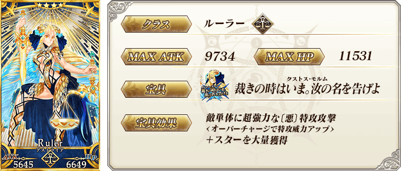
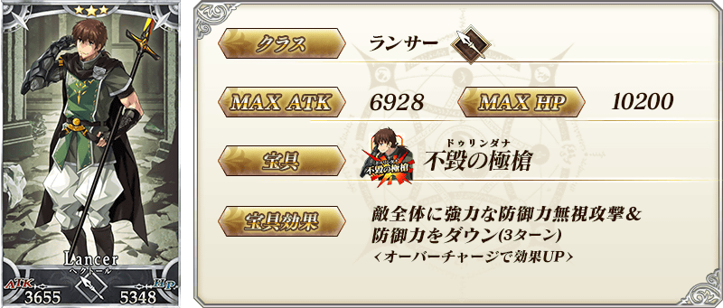
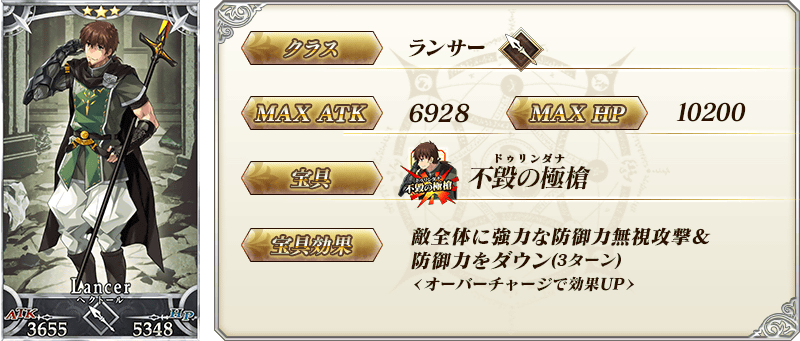
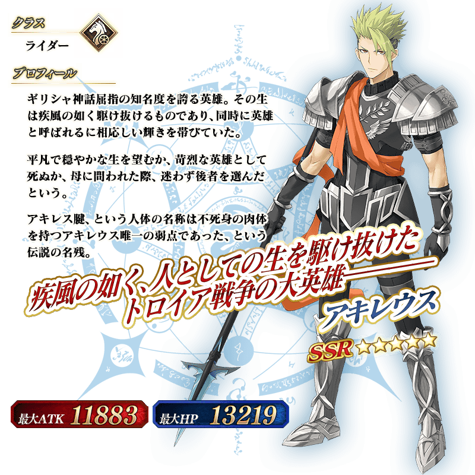
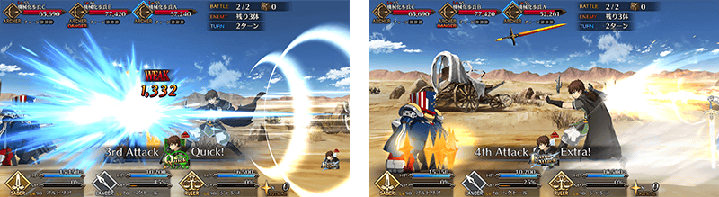

◆「亞特蘭提斯Pick Up2召喚」期間◆
期間:2019年12月25日(三) 17:00～12月31日(二) 22:59
舉辦期間限定「亞特蘭提斯Pick Up2召喚」！ ※未通過第2部 第5章「Lostbelt No.5 神代巨神海洋 亞特蘭提斯 擊落神之日」的狀態也能進行「亞特蘭提斯Pick Up2召喚」。
「★5(SSR)阿基里斯」「★4(SR)阿斯特蕾亞」自第2部 第5章「Lostbelt No.5 神代巨神海洋 亞特蘭提斯 擊落神之日」Pick Up！
並且，在2019年12月18日(三)進行動作翻新的「★3(R)赫克特」也Pick Up！
另外，在「亞特蘭提斯Pick Up召喚(每日交替)」先行新登場「★5(SSR)救済願いし者」「★4(SR)野望の嚆矢」「★3(R)ノーブル・ピース」也登場！
並且，翻新★3(R)概念禮裝的一部份陣容！
Pick Up期間中，Pick Up對象從者的出現機率提升します！
詳情請在聖晶石召喚畫面左下的召喚詳細確認。
11次召喚中確定1張★4(SR)以上和確定1位★3(R)以上的從者！ ※確定★4(SR)以上包含從者和概念禮裝。 ※本頁面皆為開發中圖片。會有與實際圖片相異的情況。
◆有關從者的注意◆
※「★5(SSR)阿基里斯」「★4(SR)阿斯特蕾亞」「★3(R)赫克特」在Pick Up期間結束後仍會在故事召喚被抽出。
◆有關概念禮裝的注意◆
※「★5(SSR)救済願いし者」「★4(SR)野望の嚆矢」「★3(R)ノーブル・ピース」的出現機率沒有提升。
※「★5(SSR)救済願いし者」「★4(SR)野望の嚆矢」「★3(R)ノーブル・ピース」自Pick Up期間結束後的2019年12月31日(二) 23:00，會追加到故事召喚。
※隨著翻新「★3(R)過ぎ去りし夢」在本Pick Up召喚為召喚對象外，只會在故事召喚被抽出。
※2019年12月31日(二) 23:00以後「★3(R)過ぎ去りし夢」也不會從故事召喚被抽出，追加至友情點數召喚。

 ※上述「★5(SSR)阿基里斯」的卡面為靈基再臨第2階段。
※上述「★5(SSR)阿基里斯」的卡面為靈基再臨第2階段。
 ※上述「★4(SR)阿斯特蕾亞」的卡面為靈基再臨第2階段。
 
※上述「★3(R)赫克特」的卡面為靈基再臨第2階段。

※上述「★3(R)赫克特」的卡面為靈基再臨第2階段。
 ※上述「★5(SSR)阿基里斯」的立繪為靈基再臨第2階段。
翻新「★3(R)赫克特」的戰鬥動作及寶具演出！
在「Fate/Grand Order」官方網站內的公告中，以影片公開寶具演出，敬請確認。
◆翻新實施時間◆
2019年12月18日(三) 21:00～

強化「★3(R)赫克特」的特別關卡「從者強化關卡」，在迦勒底之門常駐追加。
不僅進行對象從者的強化，也可獲得聖晶石做為關卡通過報酬。
※請注意在從者強化關卡沒有文字冒險部份。
◆追加時間◆
2019年12月25日(三) 17:00～
◆開放條件◆
持有的強化對象從者，必須使其最終再臨。
※未持有對象從者的話，不會出現關卡。
※關卡沒有舉辦期限。

介紹「★5(SSR)阿基里斯」「★4(SR)阿斯特蕾亞」的寶具演出！
在「Fate/Grand Order」官方網站內的公告中，以影片公開寶具演出，敬請確認。
其他還有，關於主線關卡第2部 第5章「Lostbelt No.5 神代巨神海洋 亞特蘭提斯 擊落神之日」和期間限定「亞特蘭提斯Pick Up召喚(每日交替)」的詳情，請自下述橫幅確認。
■「Lostbelt No.5 神代巨神海洋 亞特蘭提斯 擊落神之日」詳細情報

■「亞特蘭提斯Pick Up召喚(每日交替)」詳細情報